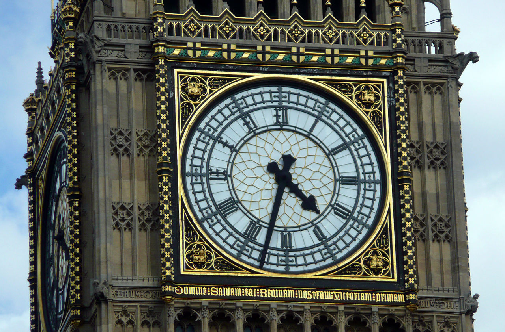

Історія
Годинники, як інструменти для вимірювання проміжків часу, менших за добу, та часу дня, використовувалися здавна. Першими серед них були сонячні годинники, що визначали час за напрямком тіні. Недоліком сонячних годинників було те, що вони працювали тільки за ясної погоди й зовсім не працювали вночі.
Водяні годинники були відомі ще в Стародавньому Єгипті та Межиріччі.
Механічні годинники почали з'являтися в Європі в 14 столітті. Перші з них не мали ані стрілок, ані циферблата, про час доби сповіщав дзвін. Існують і раніші згадки про годинники, наприклад, про годинник, одержаний Карлом Великим у подарунок від Гарун ар-Рашида, однак про будову цих годинників свідчень не збереглося. У 15 — 16 століттях величезні годинники почали встановлювати на площах великих міст Європи. Точність цих годинників була невисокою, до чверті години. Як джерело енергії в них спочатку використовувалася вода, потім, у сучасніших конструкціях — гирі. Дорогу до цих годинників відкрив винахід штирьового спускового механізму.
Крім утилітарної функції визначення часу доби, годинники епохи Відроження мали важливе значення для астрономії та астрології, завдяки чому вони часто показували не тільки час, а й дату, день тижня, фази Місяця, і, навіть, гороскоп.
Важливою подією в розвитку годинників було відкриття Галілео Галілеєм ізохронності коливань маятника, тобто того факту, що період малих коливань маятника не залежить від амплітуди. Після цього виникла ідея маятникового годинника.
Механічний годинник із годинниковою і хвилинною стрілками винайдено лише в 17 столітті. Перший годинник з маятником винайшов у 17 ст. голландський механік Хрістиян Гюйгенс. Це був найточніший годинник серед усіх інших годинників. Незалежно від Гюйгенса маятниковий годинник побудував Роберт Гук. Анкерний механізм винайшов 1670 року англійський механік Вільям Клемент. У 1675 році Томас Томпіон сконструював ще точніший годинник, у якому маятник він замінив пружиною.
Розвиток годинників стимулювався практичними потребами навігації. Для точного визначення координат корабля на морі були потрібні годинники, що визначали б час не тільки точно, а й в умовах корабельної хитавиці. Такий годинник, що отримав назву хронометра, створив Джон Гаррісон. За цей винахід Гаррісон у 1772 р. одержав премію у 20 тис. фунтів від британського короля.
У 19 ст. з'явився перший електричний годинник. У 1840 році Філіпп-Самуель Мейлан вперше розташував механізм безпосередньо під циферблатом, що дозволило значно зменшили товщину годинника і відкрила еру ультратонких годинників. У 1918 році електрогодинник вже міг працювати на струмі з мережі.
З розвитком електроніки у другій половині 20 ст. електронні годинники почали заміщати механічні. Електронні годинники, які відлічують час із великою точністю, використовують кристали кварцу. Такий принцип ґрунтується на природній вібрації (100 000 коливань за секунду) у кристалах кварцу, а джерелом живлення є батарейка. Сучасні годинники нагадують крихітний комп'ютер. Вони мають будильник і секундомір, а час відображають на електронному дисплеї. Електронні годинники стали складовою частиною комп'ютерів, мобільних телефонів та інших побутових приладів — таймерами оснащені мікрохвильові печі й пральні машини тощо.
Наукові експерименти потребують вимірювання часу ще з більшою точністю, завдяки чому виникли атомні годинники, які використовують коливання електромагнітного поля, створеного випромінюванням атомів при переходах між електронними рівнями. За дуже низьких температур цезієві атомні годинники можуть забезпечити точність вимірювання часу до 10−11 секунди.
Годинникові механізми
Сучасні годинники, механічні, електронні або атомні, використовують для вимірювання часу періодичні процеси — автоколивання. Принципова будова всіх типів годинників однакова: вони мають у своєму складі коливну систему, контрольний механізм, джерело енергії та індикатор. Контрольний механізм забезпечує надходження енергії від джерела до коливної системи порціями, що компенсують дисипацію енергії в ній. Індикатор служить для того, щоб відображати інформацію про час на циферблаті зі стрілками або електронному дисплеї.
Механічні годинники використовують гармонічні коливання маятника або пружини, компенсуючи втрату енергії на тертя контрольованим поступанням енергії від джерела. Контроль за отриманням енергії здійснюється завдяки анкерному механізму.
Маятниковий годинник має довгий стрижень із вантажем на кінці, який вільно гойдається в обидва боки. Маятник завжди гойдається з постійною швидкістю, завдяки чому маятниковий годинник відлічує час із великою точністю. Джерелом енергії у маятниковому годиннику є гиря, піднята на певну висоту. Вона повільно опускається з кожним поворотом анкера, віддаючи свою енергію маятнику.
У наручних механічних годинниках замість маятника використовуються обертальні коливання балансира, а джерелом енергії служить скручена пружина.
У електронних годинниках використовуються коливання п'єзоелектричного кристалу кварцу, роль контрольного механізму відіграє електронна схема, а джерелом енергії є батарейка.
Найточнішими є атомні годинники, принцип дії яких полягає у вимірюванні частоти випромінювання окремих атомів. Сучасний еталон секунди визначається, як 9 192 631 770 періодів випромінювання атома цезію-133 при переході між двома надтонкими рівнями основного стану, розщепленими у магнітному полі ядра, при сталій довжині хвилі, нульовій температурі й відсутності зовнішнього магнітного поля.
Класифікація
- За розмірами і портативністю:
- кишеньковий годинник;
- наручний
годинник;
- Ударостійкі та водонепроникні годинники
- LED годинники
- каретний годинник;
- настільний годинник;
- підлоговий годинник;
- баштовий годинник.
-
За механізмом вимірювання:
- сонячний годинник;
- вогняний годинник;
- пісковий годинник;
- водяний годинник;
- механічний годинник;
- камертонний годинник;
- кварцовий годинник;
- Електричний годинник
- електронний годинник;
- астрономічний годинник;
- атомний годинник.